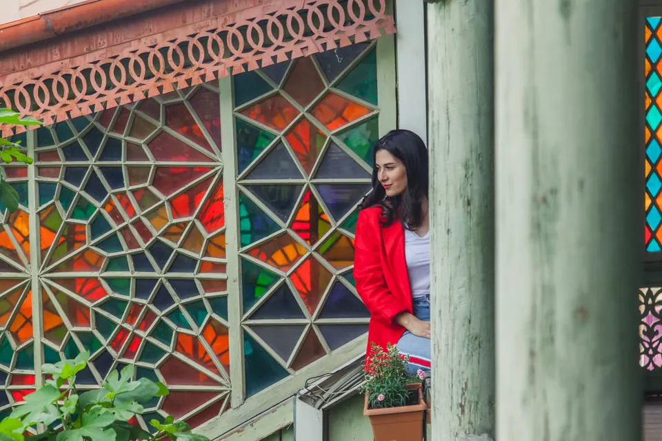
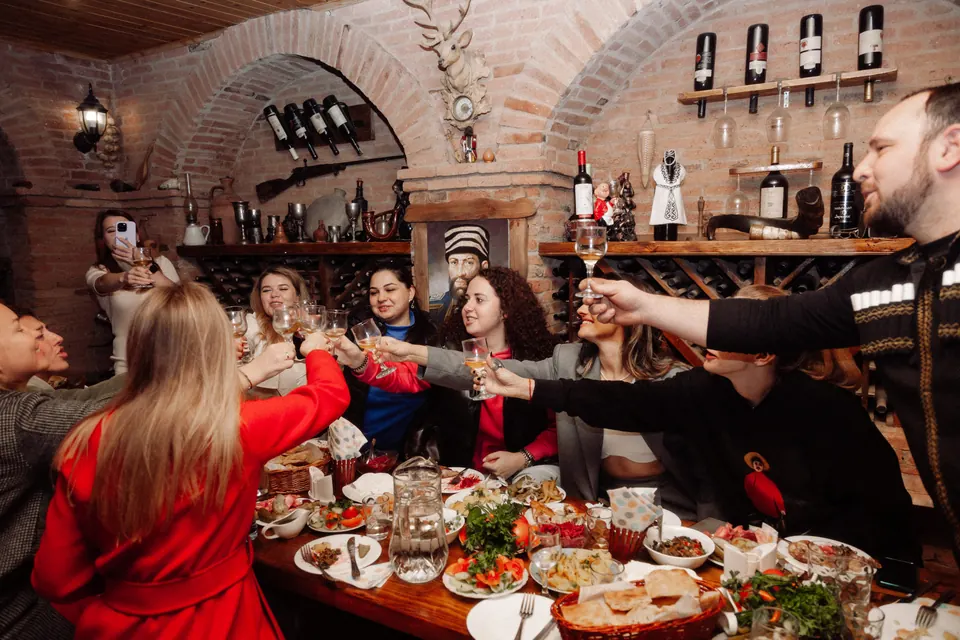
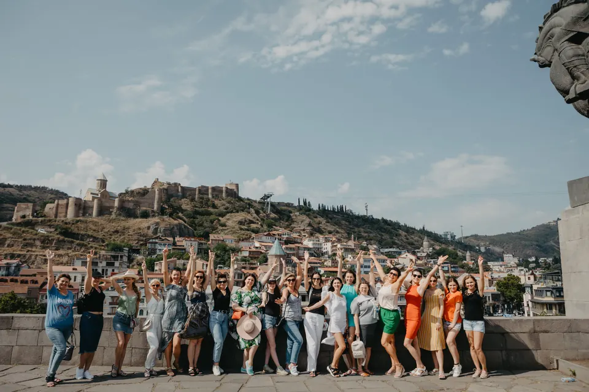
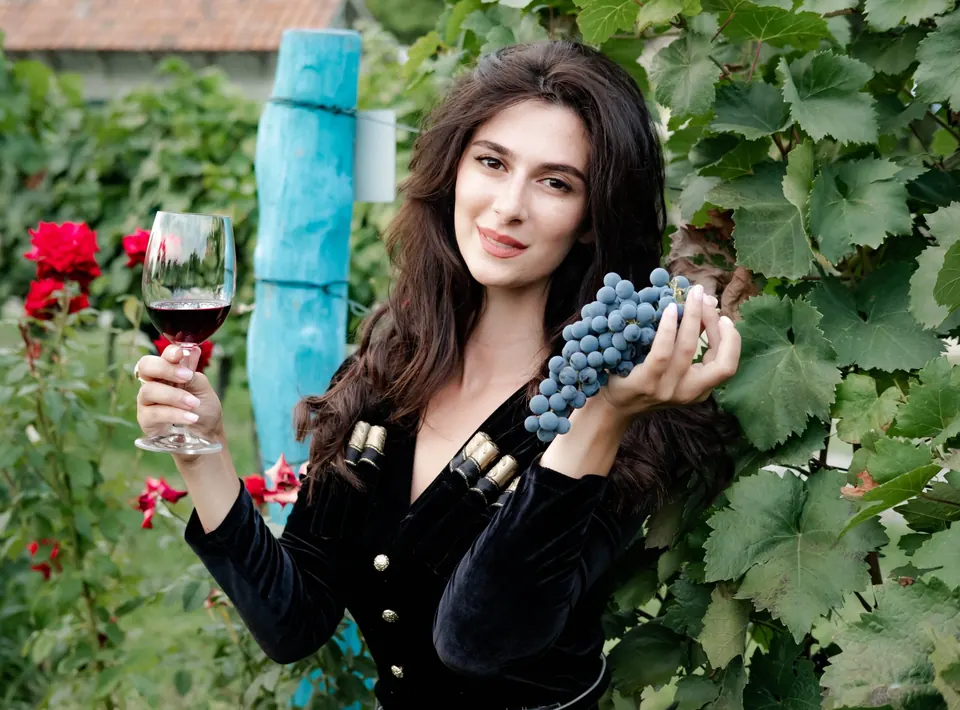

Красоты восточной Грузии. Божественно-гастро-винный тур
- 7 дней
- До 15 человек
- 1200 $

Программа
Универсальным маршрут по красотам Грузии, который позволит погрузиться во все знаменитые аспекты: еда, вино и музыка.
Маршрут
- Тбилиси
- Кахетия
- Мцхета
- Казбеги
- Сололаки
- Аэропорт
Программа по дням
- День 1
Организационный. Встреча в аэропорту Тбилиси, трансфер в бутик-отель 4 звезды, приветственный ужин-знакомство.
- День 2. Город, который обнимает
Метехская скала, бывший царский квартал, район серных бань, Мать Картли, бронзовый Тамада, Караван-сарай, башня Габриадзе. Застолье с тамадой и грузинским многоголосием, мастер-класс по грузинской кухне.
- День 3. Кахетия
Винодельня с производством (бочки, квеври, дегустация), пикник с видом на Алазанскую долину (сыр Гуда, тёплый шоти, свежие фрукты), монастырь Бодбе, Сигнахи (крепостная стена). Вечером винодельня в микрозоне Киндзмараули — дегустация, мастер-класс по чурчхеле, обед, застолье с полифонией.
- День 4
Джвари, Мцхета (Светицховели), пещерный город Уплисцихе (3000 лет), обед в гостях у винодела, известного игристыми винами. Дегустация, возвращение в Тбилиси.
- День 5. Военно-Грузинская дорога
Жинвальское водохранилище, крепость Ананури, слияние Белой и Чёрной Арагви. Обед «на родине хинкали». Арка Дружбы. Храм Гергети («2170 метров над уровнем моря»).
- День 6
Сололаки. Финальный обед в ресторане на Фуникулёре (аджарские хачапури, пончики, вид на город). Вечером прощальный ужин с тостами и песнями.
- День 7
Индивидуальный трансфер в аэропорт.
Что входит
- индивидуальный трансфер из аэропорта в первый и последний день
- все трансферы по маршруту
- проживание в номере Double в отелях 4 звезды в Тбилиси и в Кахетии (одноместный номер — за дополнительную оплату)
- завтраки в отелях
- ужин в ресторане с шоу-программой (в Тбилиси)
- все дегустации в Кахетии, заявленные в программе
- обед в Кахетии
- мастер-классы и участие в сборе винограда
- ужин на виноградниках
- дегустация и экскурсия на винодельнях
- обед в грузинской семье (2 раза по маршруту)
- ужин в ресторане «Фуникулёр» с видом на Тбилиси
- услуги профессионального гида на протяжении всего маршрута
- все входные билеты по программе
- организация и сопровождение экскурсий, мастер-классов
Оплачивается отдельно
- авиа- и ЖД-билеты до Тбилиси и обратно
- ужин в отеле в первый день (если рейс поздний)
- личные расходы
Условия
Бронь тура по предоплате 200$ . Остаток вносим наличными в первый день тура. С каждым участником тура заключается договор на внесение предоплаты и оплаты тура.
Внимание! Организатор вправе заменить последовательность локаций, в случае необходимости.



